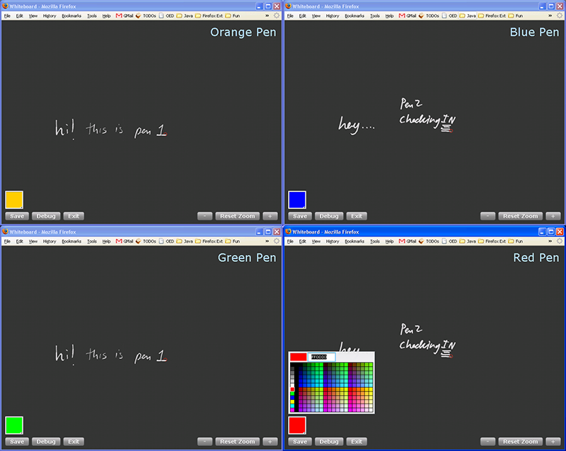

Flash Integration
R3 provides integration with Adobe Flash. The basic idea is that R3's Java components talk to Flash GUIs through the network (a socket connection).
- We will walk through a simple demonstration application of how you can use the R3 Flash Components.
- The Flash components can be compiled if you have Adobe's Flex Builder 2. Point it to PaperToolkit/flash, and Flex will import the project automatically. In the future, we will try to support some of the free open source development tools, such as MTASC. But right now, if you don't have access to the Flex builder, you can try downloading the free Flex 2 SDK and see if you can get the components compiled (I haven't tried using the command line tools yet).
- If you do not have the Flex compilers, you can grab the binaries from http://hci.stanford.edu/paper/deployments/files/flash/.
Just grab the most recent one (the version as of this writing is April 14, 2007). Unzip it into your PaperToolkit/flash/ directory, so that the Whiteboard.swf file can be found in PaperToolkit/flash/bin/.
- In the PaperToolkitDemos, navigate to edu.stanford.hci.r3.demos.flash and take a look at LiveWhiteboard.
- Notice that we create two Pen devices. Then, we create four FlashWhiteboard components, and attach each pen to two different live whiteboards. When you run the code (you will have to edit the code so that the Pen devices reflect your own setup), you will see four browser windows pop up. I've tiled them by CONTROL+clicking on the Windows taskbar, and choosing Tile Horizontally.

- Also notice that you can customize the Title and the color swatch for each window. We'll add more features to this flash component in the future.
Ron B. Yeh
Stanford University